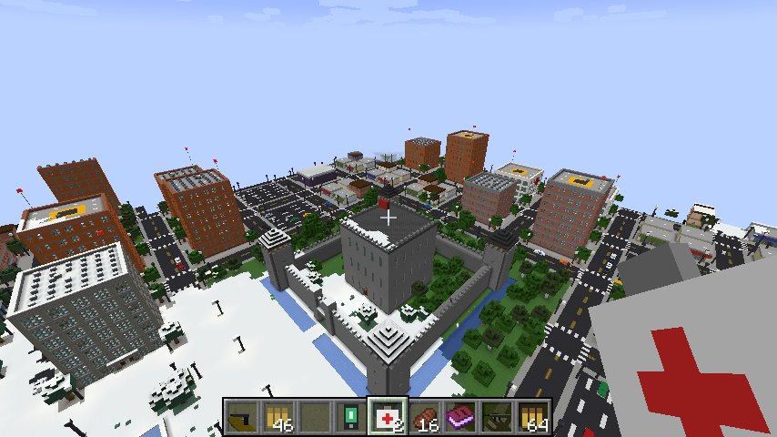
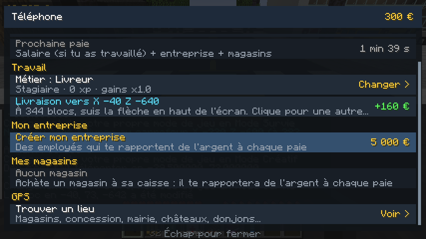
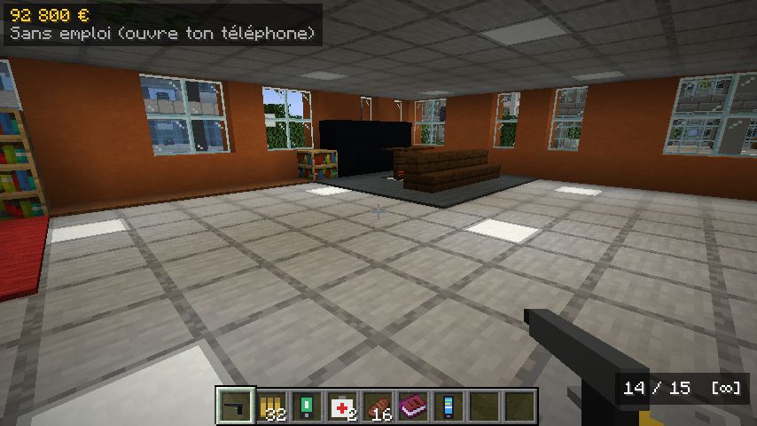
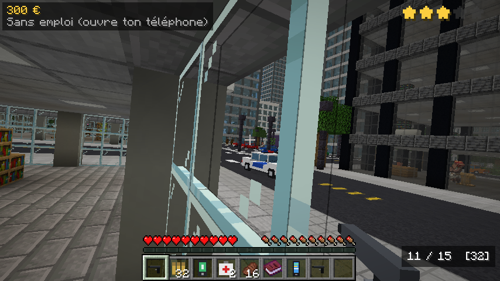

Une ville sans fin
Gratte-ciel, quartiers, villages, châteaux, bases militaires et donjons.
Le monde entier est une ville. Trouve un métier, gagne ta vie, achète ta maison, ta voiture et tes magasins. Et évite la police.
Je débute : suivre le guide Télécharger seulement le modJamais joué à Minecraft ? Aucun problème. Fais les étapes dans l'ordre, sans en sauter. Ce n'est à faire qu'une seule fois.
forge-1.20.1-47.4.0-installer.%appdata%\.minecraft\modsmegamonde-1.0.0.jar depuis Téléchargements jusque dedans.chords-simmering.tun.ply.gg/register, un espace, ton mot de passe, un espace, puis encore ton mot de passe. Exemple avec le mot de passe soleil42 :
/register soleil42 soleil42/ se fait avec Maj + :. Ton mot de passe doit faire au moins 4 caractères, sans espace./login tonmotdepasse.| Z Q S D | Avancer, gauche, reculer, droite |
| Souris | Regarder autour de toi |
| Espace | Sauter |
| Molette | Changer l'objet que tu tiens |
| E | Ouvrir ton inventaire |
| Clic droit | Utiliser l'objet, ouvrir ou acheter |
| T | Écrire dans le chat |
| Échap | Menu du jeu, et se déconnecter |
/telephone.Ferme complètement le launcher puis rouvre-le. Si rien ne change, refais l'étape 3 : l'installation n'est pas allée jusqu'au bout.
Tu as lancé le jeu sans Forge, ou le mod n'est pas dans le bon dossier. Refais les étapes 4, 5 et 6, et vérifie que « forge » est bien sélectionné avant de cliquer sur JOUER.
Vérifie l'adresse, sans espace avant ou après. Si elle est bonne, le serveur est sans doute éteint : il tourne sur l'ordinateur de l'organisateur. Réessaie plus tard ou préviens-le.
Tu as dépassé les 90 secondes sans donner ton mot de passe. Reviens sur le serveur et tape la commande tout de suite (étape 8).
Ce pseudo est déjà pris. Si c'est le tien, utilise /login tonmotdepasse. Sinon, choisis un autre pseudo dans ton launcher.
Demande à l'organisateur du serveur de l'effacer. Tu pourras ensuite en choisir un nouveau avec /register, et tu gardes ta partie.
Une fois connecté, tape /motdepasse ancien nouveau.

Gratte-ciel, quartiers, villages, châteaux, bases militaires et donjons.

Livreur, taxi, policier, mineur, agriculteur, bûcheron. Achète des magasins, crée ton entreprise, roule en Supercar.

Passe voir un agent immobilier. Personne d'autre ne peut l'acheter, y entrer par la porte ou y toucher.

Tue plusieurs personnes et les étoiles tombent. Sirènes, voitures, renforts. À toi de les semer.
| Clic droit | Tirer, utiliser, ouvrir le téléphone |
| R | Recharger |
| Accroupi | Viser |
| Z Q S D | Conduire |
| H | Klaxon |
| Maj | Descendre de voiture |
| M | Zoom de la minicarte |
| Manette Xbox | Rien à régler, branche-la |
| RT / LT | Tirer et viser. En voiture : gaz et frein |
| A / B | Sauter, s'accroupir, descendre |
| X / Y | Recharger, inventaire |
| View | Téléphone |
Les commandes du chat : /argent, /payer pseudo montant, /telephone, /motdepasse ancien nouveau.